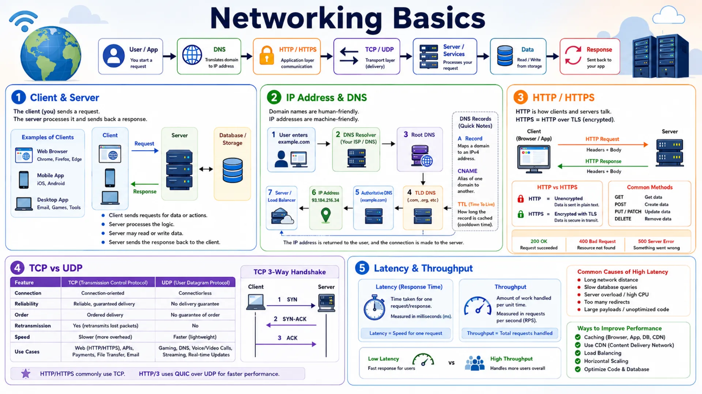
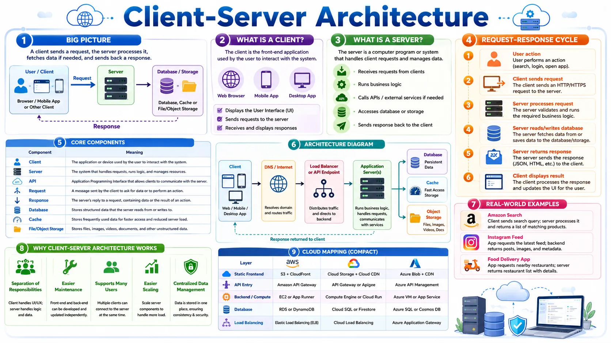
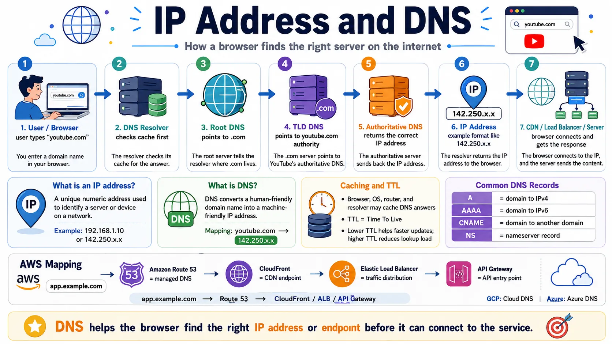
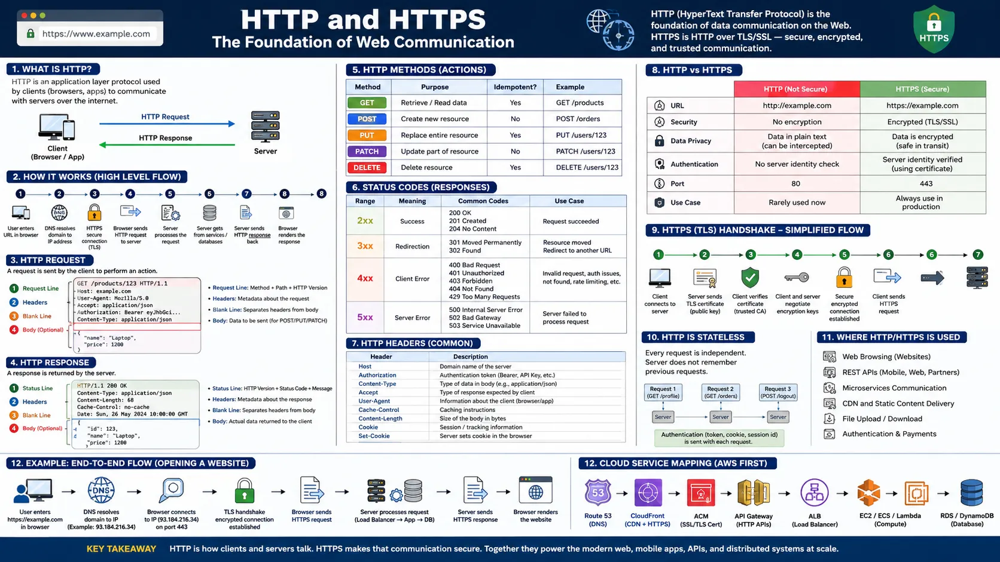
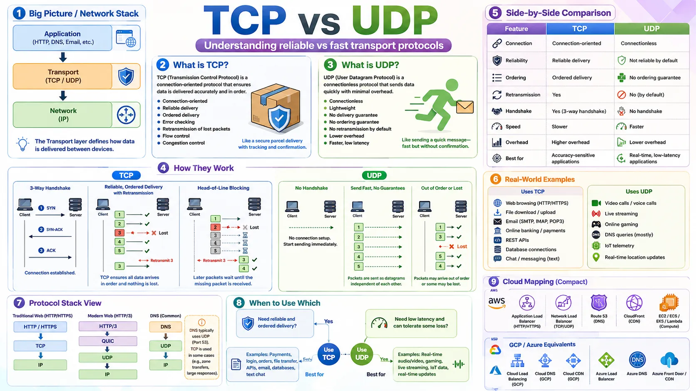
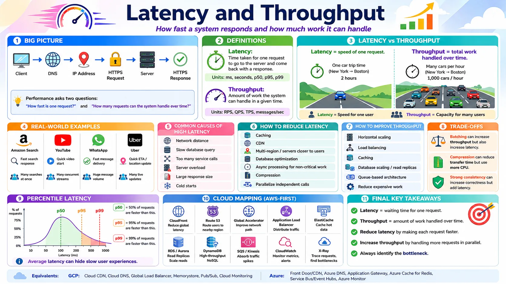

Networking Basics for System Design: A Complete Beginner's Guide

📚 Table of Contents
Every internet application starts with a simple question: how do two programs talk to each other? This post covers five essential networking topics every system designer must know. You will start with Client & Server — the foundation of every web and mobile application. Then you will learn how machines find and reach each other through IP Address & DNS — the addressing and naming system of the internet. From there you will explore HTTP / HTTPS, the communication protocol that clients and servers use to exchange data, followed by TCP vs UDP, the two transport protocols that trade reliability against speed. Finally, you will understand Latency & Throughput — the two performance metrics that determine how fast and how much your system can handle. Each topic is explained with real-world analogies, step-by-step examples, and clear diagrams — starting from zero.
🌐 1. Client & Server
The client-server model is where every system design journey begins. Before you can understand load balancers, databases, CDNs, or APIs, you need to understand this one idea: a client asks, a server answers. In this section, we will build that understanding from the ground up — with analogies, step-by-step examples, and clear diagrams — so that every concept that follows makes intuitive sense.

1.1 🎯 Introduction
Imagine you type netflix.com into your browser. Within milliseconds, your browser has contacted Netflix's servers, authenticated your account, fetched a personalised list of movies, and started streaming a video — all without you doing anything beyond pressing Enter. That entire sequence is the client-server model in action.
Your browser is the client — the program that asks for something. Netflix's backend systems are the servers — the programs that listen for requests and send back replies. Every time you open a website, send a WhatsApp message, order on Amazon, or call an Uber, this exact exchange is happening behind the scenes.
1.2 💡 Why It Matters
Every single system design problem starts with the same question: how does the user's device communicate with the backend? Whether you are designing Instagram (2 billion users), Uber (150 million users), or a simple URL shortener, the answer always begins with the client-server model. Everything else — load balancers, databases, caches, CDNs — exists to make this basic exchange faster, more reliable, and capable of handling millions of users at once.
- Without understanding clients and servers, you cannot reason about how requests reach your system.
- Load balancers only make sense when you understand that many clients send requests to multiple servers.
- CDNs only make sense when you understand that static files are served from servers closer to the client.
- Microservices only make sense when you understand that a server can itself be a client to another server.
Foundation first: In system design, strong answers always start with the simple request-response path and then evolve. Never jump straight to "Kafka, Redis, sharding, microservices" — always start with "a client sends a request to a server."
1.3 🏠 Real-world Analogy
Think of a restaurant. You walk in, sit at a table, and look at the menu. When you are ready, you call the waiter over and place your order. The waiter goes to the kitchen, the kitchen prepares your food, and the waiter brings it back to your table.
| Restaurant World | Software World | Role |
|---|---|---|
| 👤 Customer | 💻 Client (browser / app) | Asks for something |
| 🧑💼 Waiter | 🌐 API / Server interface | Receives the request, coordinates work |
| 👨🍳 Kitchen | ⚙️ Application server | Runs the actual business logic |
| 🗄️ Storage room | 🗃️ Database / storage | Keeps data, files, and records |
| 🍽️ Meal served | 📦 HTTP Response | The result sent back to the client |
Notice a key point: you never go to the kitchen yourself. You send a request through the waiter, and the waiter brings back the result. This is exactly how a client and server communicate — the client never directly touches the database or business logic; it only talks to the server.
1.4 📖 Key Terms
| Term | Simple Definition | Quick Example |
|---|---|---|
| Client | A program or device that initiates a request | Your browser, your mobile app, a CLI tool |
| Server | A program that listens for requests and sends responses | Amazon's backend, YouTube's API service |
| Request | The message the client sends to ask for data or an action | "Get me the homepage" / "Log me in" |
| Response | The server's reply — either the requested data or an error | HTML page, JSON data, 404 Not Found |
| Protocol | An agreed-upon set of rules for how two programs communicate | HTTP, HTTPS, TCP, WebSocket |
| Port | A number that identifies a specific service running on a server | Port 80 = HTTP, Port 443 = HTTPS, Port 5432 = PostgreSQL |
| IP Address | The unique address of a device or server on a network | 142.250.80.14 (a Google server) |
| Network | The infrastructure connecting clients to servers | The internet, a company's private network |
Remember: A server is a program, not a physical machine. Your laptop can run a server. One physical machine can run dozens of server programs at the same time on different ports.
1.5 🔢 How It Works
Let us walk through exactly what happens when you type amazon.com in your browser and press Enter. This is the most important request path to understand in system design.
| Step | What Happens |
|---|---|
| ① Type URL | Your browser (the client) is ready to make a request. It needs to find where Amazon's server lives on the internet. |
| ② DNS Lookup | Browser asks the DNS system: "What is the IP address of amazon.com?" DNS responds with something like 205.251.242.103. (DNS is covered fully in Section 3.) |
| ③ Connect | Browser opens a connection to that IP address on port 443 (HTTPS). |
| ④ Send Request | Browser sends an HTTP GET request: GET / HTTP/1.1 Host: amazon.com |
| ⑤ Server Processes | Amazon's server receives the request, runs business logic, and queries the database for product listings and your session data. |
| ⑥ Send Response | The server builds an HTTP response containing the HTML for the Amazon homepage and sends it back through the internet. |
| ⑦ Browser Renders | Your browser receives the HTML and displays the Amazon page. Done — typically in under 500 ms. |
Key insight: The entire exchange above — from Step 1 to Step 7 — typically happens in under 500 milliseconds. For large-scale systems like Amazon, this same process happens for millions of users simultaneously, which is why concepts like load balancers, caches, and CDNs become necessary.
1.6 🔀 Types & Variations
"Client" and "server" are roles, not fixed things. The same program can be a server to some callers and a client to others. Here are the most common types you will encounter in system design.
Types of Clients
Web Browser
Chrome, Firefox, Safari — renders HTML/CSS/JS from web servers. The most common client type.
Mobile App
Instagram, WhatsApp, Uber — calls APIs on backend servers over HTTPS to fetch and send data.
Desktop App
Slack, Spotify, VS Code — connects to cloud servers in the background for data, sync, and updates.
IoT Device
Smart thermostat, security camera — sends sensor readings and receives commands from cloud servers.
Server as Client
In microservices, every service calls other services. A Payment Service is a client when calling the Fraud Detection Service.
CLI Tool
curl, wget — makes HTTP requests directly from the command line. Used by developers and automation scripts.
Types of Servers
Web Server
Nginx, Apache — serves static files: HTML, CSS, JavaScript, images. Fast and simple.
Application Server
Node.js, Django, Spring Boot — runs business logic: login, payments, recommendations, order processing.
Database Server
PostgreSQL, MySQL, MongoDB — stores and retrieves structured application data persistently.
Cache Server
Redis, Memcached — stores frequently accessed data in memory so the database doesn't need to be queried every time.
File / Object Storage
Amazon S3, Google Cloud Storage — stores large files: images, videos, backups, documents at massive scale.
Load Balancer
AWS ELB, Nginx — distributes incoming client requests across multiple servers to prevent any one from being overwhelmed.
The "server as client" pattern: In modern microservices architectures, almost every service acts as both a server (to the services that call it) and a client (to the services it calls). For example, Instagram's Feed Service is a server to the mobile app, but it's a client to the User Service, Media Service, and Recommendation Service.
1.7 🎨 Illustrated Diagram
The diagram below shows the core client-server request-response cycle — a client sends a request, the server processes it and queries the database, and the response travels back. This is the fundamental pattern behind every internet application.
Reading the diagram: The client sends an HTTP Request ① to the server. The server queries ② the database for the data it needs, the database returns ③ the result, and the server sends an HTTP Response ④ back to the client. Every internet interaction follows this four-step cycle.
1.8 ✅ When to Use
The client-server model is the default choice for virtually every internet application. You should use it whenever you have a centralized resource to share, business logic to protect, or data that needs to be consistent across users.
| Use client-server when… | Avoid (consider P2P) when… |
|---|---|
| You have shared data that many users need to access | You need true decentralisation with no central authority (e.g. blockchain) |
| You want centralised access control and authentication | Users need to share files directly with each other (BitTorrent-style) |
| You need to update business logic without touching clients | You want to eliminate the server cost entirely |
| You need to scale the backend independently of clients | Low-latency real-time communication between two specific peers |
| You want to monitor, log, and secure all traffic centrally | You require censorship resistance by design |
Rule of thumb: If you are designing any application for users — social media, e-commerce, banking, streaming, messaging — use client-server. If you are designing a decentralised protocol or file-sharing network, consider Peer-to-Peer. In practice, 99% of system design problems use client-server.
1.9 🏗️ Real-world Example — Instagram
When you open Instagram on your phone and scroll through your feed, here is what happens behind the scenes:
| Step | Actor | What Happens |
|---|---|---|
| ① | 📱 Your Phone (Client) | Sends GET /feed?user_id=123&page=1 to Instagram |
| ② | ⚖️ Load Balancer | Receives the request and routes it to one of many available API servers |
| ③ | ⚙️ API Server | Checks who you follow, runs the ranking algorithm, decides which posts to show |
| ④ | ⚡ Cache Server | Checked first — if your feed was recently built, it's returned instantly from memory |
| ⑤ | 🗄️ Database Server | Returns post metadata (captions, like counts, timestamps) — images are stored separately |
| ⑥ | ⚙️ API Server | Builds a JSON response with post data and image URLs, sends it back to your phone |
| ⑦ | 📱 Your Phone (Client) | Receives JSON, makes separate requests to CDN servers to download the actual images |
| ⑧ | 🌍 CDN Server | Delivers image files from the edge location nearest to you — fast, low latency |
Notice: Your phone (one client) communicated with five different server types — Load Balancer, API Server, Cache Server, Database Server, and CDN Server — all within a single feed load. This is how real large-scale systems work: many specialised servers working together to serve one client request.
New terms above? Load Balancer, Cache Server, and CDN will each get their own dedicated post in Phase 2 of this series. For now, just notice that a single client request touches multiple server types — that is the key insight from this example.
1.10 ⚖️ Trade-offs
| ✅ Advantages | ❌ Disadvantages |
|---|---|
| Centralised control — update the server and all clients get the update instantly, no app store releases needed | Single point of failure — if the server goes down, no client can work; requires redundancy and high-availability design |
| Security — sensitive business logic, API keys, and data stay on the server; clients never see internals | Server cost — running servers 24/7 at scale is expensive; requires infrastructure investment |
| Scalability — add more servers to handle more clients without changing client code | Network dependency — clients need a working internet connection; offline mode requires extra engineering |
| Consistency — all clients read from the same data source, so everyone sees the same information | Latency — every action requires a network round-trip to the server; cannot be fully instant |
| Maintainability — bugs are fixed in one place (server), not in millions of client devices | Bottleneck risk — a poorly designed server becomes a bottleneck under high traffic |
1.11 🚫 Common Mistakes
| # | ❌ Common Mistake | ✅ The Reality |
|---|---|---|
| 1 | Server = physical machine | A server is a program, not a box. You can run a web server on your laptop right now. One physical machine can run dozens of server programs simultaneously on different ports. |
| 2 | A server can never be a client | In microservices, services constantly switch roles. The Payment Service is a server to the frontend but a client to the Fraud Detection Service. Roles are relative, not fixed identities. |
| 3 | Web server = application server | A web server (Nginx, Apache) serves static files. An application server (Node.js, Django) runs business logic. Most production systems have both doing different jobs. |
| 4 | One server handles all requests | Large systems like Instagram run on thousands of servers across multiple data centres. Designing for a single server is the most common beginner mistake in system design. |
| 5 | The client sees the server's internals | Clients only know the server's address and protocol. All internal logic — databases, services, business rules — is hidden. This is called encapsulation and is a security best practice. |
| 6 | Start with complex architecture | Always start with the simple path: Client → Server → Database. Add load balancers, caches, and CDNs only when a specific problem justifies the complexity. |
1.12 📝 Summary
- Client initiates, Server responds — the client always makes the first move; the server waits and reacts.
- A server is a program, not a physical machine — it can run on any hardware, including your laptop.
- A server can be a client — in microservices, services call each other; roles are relative, not fixed.
- Multiple server types work together — a single user request typically touches several specialised servers: application server, database, and more.
- Always start simple — Client → Server → Database is the baseline; add complexity only when justified by scale or requirements.
1.13 🏋️ Design Challenge
🍕 Challenge: Design a food delivery app
You are designing a system like Uber Eats or DoorDash. Think through the following:
- What are the different types of clients in your system? (Hint: there is more than one kind of user.)
- What are the different types of servers you would need? List at least four.
- Draw a simple diagram showing how a customer places an order — trace the request from the customer's phone to the restaurant and back.
- What happens if your main application server goes down while someone is placing an order?
👁️ Show Answer
Types of Clients (3 distinct roles):
- 📱 Customer app (iOS/Android) — places orders, tracks delivery in real time
- 🍔 Restaurant dashboard (tablet/web app) — receives new orders, marks them as ready
- 🚗 Driver app (mobile) — receives delivery assignments, navigates to pickup and drop-off
Types of Servers needed:
- ⚙️ API Server — the main application server; handles all requests from all three client types
- 💳 Payment Server — processes card charges securely when an order is placed
- 🔔 Notification Server — sends real-time alerts to the restaurant and driver apps
- 🗄️ Database Server — stores users, restaurants, menus, orders, and delivery status
Request flow when a customer places an order:
- Customer app (client) → sends
POST /ordersrequest to the API Server - API Server validates the order and writes it to the Database Server
- API Server calls the Payment Server to charge the customer's card
- API Server tells the Notification Server to alert the restaurant
- Notification Server pushes the order to the Restaurant app (client)
- Restaurant accepts → API Server updates order status in the Database
- API Server responds to the customer app: order confirmed ✅
If the application server goes down:
Orders cannot be placed — customers see an error. The fix is to run multiple application servers so if one fails, others continue handling requests. We will cover exactly how this works when we study Load Balancers in Phase 2.
1.14 ☁️ Cloud Service Mapping
In the cloud, a "server" is any service that receives and processes requests. The three main ways to run server code on any cloud platform are:
| How to Run a Server | AWS (Primary) | GCP | Azure |
|---|---|---|---|
| Virtual machine — full control over the server environment | Amazon EC2 | Compute Engine | Azure VMs |
| Managed app hosting — deploy your code, cloud manages the server | Elastic Beanstalk / App Runner | App Engine / Cloud Run | Azure App Service |
| Serverless — a function that acts as a server, runs only when called | AWS Lambda | Cloud Functions | Azure Functions |
Simplest AWS picture: A browser (client) sends a request → EC2 instance or Lambda function (server) receives and processes it → sends a response back. That is the client-server model running in the cloud.
🌍 2. IP Address & DNS
Every device on the internet has a unique numeric address — an IP address — just like every house has a street address. But humans don't think in numbers. We use friendly names like youtube.com. DNS is the system that bridges this gap, translating the names we type into the addresses machines actually use. In this section you will learn what IP addresses are, how public and private addresses differ, how DNS resolves names step by step, and why both concepts are foundational to every system design decision you will make.

2.1 🎯 Introduction
Imagine you type youtube.com into your browser. You know the name — but your computer does not know where YouTube's servers are physically located on the internet. It needs a numeric address. An IP address is that numeric address: a unique identifier assigned to every device connected to a network, from your laptop to YouTube's servers.
But here is the challenge: IP addresses look like 142.250.80.14. No human is going to memorise that. So the internet uses a naming system called DNS — Domain Name System — that automatically translates youtube.com into 142.250.80.14 every time you press Enter. Without IP addresses, devices cannot communicate. Without DNS, humans cannot use the internet practically.
2.2 💡 Why It Matters
IP addresses and DNS are not optional infrastructure — they are the foundation on which every internet system runs. Cloudflare's public DNS resolver (1.1.1.1) alone handles over 1 trillion DNS queries per month. Google's DNS (8.8.8.8) processes billions of queries daily. Every website visit, API call, and app request begins with a DNS lookup.
- In system design, DNS is how traffic is routed to the right servers — load balancers, CDN edge nodes, and multi-region endpoints all use DNS.
- When you add a new server or replace a failed one, you update a DNS record — not every client application.
- Private vs public IP addressing determines what parts of your system are reachable from the internet — a critical security decision.
- DNS TTL directly controls how quickly your system can recover from failures and how smoothly you can migrate servers.
Key insight: DNS is where system design meets the internet. Every load balancer, CDN, and API gateway in this series is ultimately reached through a DNS record. Understanding DNS now means every future topic will make more sense.
2.3 🏠 Real-world Analogy
Think of a city's postal system. Every building has a street address (the IP address) — a precise numeric location that delivery services use to physically find it. But people don't walk around saying "I'm going to 221B Baker Street" — they say "I'm going to Sherlock Holmes' house." The phonebook or directory is what translates that name into the actual address.
| Real World | Internet / Software | Role |
|---|---|---|
| 🏠 Street address (221B Baker St) | IP address (142.250.80.14) | The actual numeric location machines use to connect |
| 🏷️ Person or place name (Sherlock's house) | Domain name (youtube.com) | The human-friendly name people remember and type |
| 📖 Phonebook / directory | DNS (Domain Name System) | Translates names into addresses automatically |
| 📬 Speed-dial / recent calls list | DNS cache (browser/OS/resolver) | Stores recently looked-up addresses for quick re-use |
Just as you would look up a name in a phonebook to find the phone number, your browser looks up a domain name in DNS to find the IP address — every single time, unless the answer is already cached.
2.4 📖 Key Terms
| Term | Simple Definition | Quick Example |
|---|---|---|
| IP Address | A unique numeric address identifying any device on a network | 142.250.80.14 (a YouTube server) |
| IPv4 | 4-part dotted format, supports ~4.3 billion addresses | 8.8.8.8 (Google DNS), 192.168.1.1 (home router) |
| IPv6 | 128-bit hex format, virtually unlimited addresses | 2001:db8::7334 |
| Public IP | Reachable from the internet — your server's external address | Load balancer, CDN, API gateway endpoint |
| Private IP | Internal-only, not routable on the internet | 10.0.0.5 (database inside a VPC) |
| Domain Name | Human-readable name for a server or service | youtube.com, api.stripe.com |
| DNS | Domain Name System — the internet's distributed phonebook | Translates youtube.com → 142.250.80.14 |
| DNS Resolver | The component that performs the full DNS lookup on a client's behalf | 8.8.8.8 (Google), 1.1.1.1 (Cloudflare) |
| DNS Record | A specific entry in the DNS system mapping a name to a value | A record, CNAME record, MX record |
| TTL | Time To Live — how long a DNS answer can be cached before it must be re-fetched | TTL = 300 means cache for 5 minutes |
| Authoritative DNS | The final DNS server that has the definitive answer for a domain | YouTube's own nameservers have youtube.com records |
2.5 🔢 How It Works
Here is the exact sequence of events when you type youtube.com in your browser and press Enter. This process completes in milliseconds, but involves up to 9 steps behind the scenes.
| Step | What Happens |
|---|---|
| ① Browser cache | Browser checks if it already has a cached answer for youtube.com. If yes, use it immediately — no DNS query needed. |
| ② OS cache | If not in browser cache, the operating system checks its own DNS cache. If found, return it. |
| ③ Ask DNS Resolver | If no cached answer, the OS asks the configured DNS Resolver (e.g. 8.8.8.8 or your ISP's resolver). |
| ④ Resolver → Root DNS | Resolver asks a Root DNS server: "Who manages .com domains?" Root returns the address of the .com TLD servers. |
| ⑤ Resolver → TLD DNS | Resolver asks the .com TLD server: "Who manages youtube.com?" TLD returns the address of YouTube's authoritative nameservers. |
| ⑥ Resolver → Authoritative DNS | Resolver asks YouTube's own authoritative DNS: "What is the IP address of youtube.com?" Authoritative returns: 142.250.80.14 (TTL: 300s). |
| ⑦ Resolver caches + responds | Resolver caches the answer for 300 seconds, then returns the IP address to your browser. |
| ⑧ Browser connects | Browser now knows the IP address and opens a TCP connection to 142.250.80.14 on port 443 (HTTPS). |
| ⑨ YouTube responds | YouTube's server receives the request and sends back the homepage HTML. You see YouTube. |
Fast path: Steps ④–⑥ are skipped whenever a cached answer exists — which is most of the time for popular domains. Caching is what makes DNS fast enough to be invisible to users.
2.6 🔀 Types & Variations
Types of IP Addresses
IPv4
4 numbers separated by dots, each 0–255. Example: 8.8.8.8. Supports ~4.3 billion addresses — largely exhausted. Still the most widely used format today.
IPv6
128-bit hex format. Example: 2001:db8::7334. Supports 340 undecillion addresses — effectively unlimited. Growing adoption for new infrastructure.
Public IP
Assigned by your internet provider, visible on the internet. Every internet-facing entry point (load balancer, CDN, API gateway) needs one. Example: 203.0.113.5.
Private IP
Not routable on the internet. Used for internal services — databases, caches, backend APIs. Common ranges: 10.x.x.x, 192.168.x.x, 172.16.x.x.
DNS Record Types
| Record | What It Does | Example |
|---|---|---|
| A | Maps a domain name to an IPv4 address | youtube.com → 142.250.80.14 |
| AAAA | Maps a domain name to an IPv6 address | youtube.com → IPv6 address |
| CNAME | Maps a domain name to another domain name (alias) | www.example.com → example.com |
| MX | Specifies the mail server for a domain | @example.com → mail.example.com |
| TXT | Stores text for verification or security policies | SPF, DKIM, domain ownership proof |
| NS | Specifies the authoritative nameservers for a domain | Delegates DNS management to a provider |
2.7 🎨 Illustrated Diagram
The diagram below shows the full DNS resolution journey — from your browser typing a domain name to connecting to the actual server.
Reading the diagram: Your browser ① asks the DNS Resolver for youtube.com. The Resolver doesn't know the answer, so it asks ② Root DNS, which points it to the .com TLD servers ③④. The TLD points it to YouTube's own nameservers ⑤, which return ⑥ the final IP address with a TTL of 300 seconds ⑦. The Resolver caches the answer and returns it ⑧. Your browser then connects directly to YouTube's server ⑨.
2.8 ✅ When to Use
| Scenario | Use This | Why |
|---|---|---|
| Internet-facing entry points (load balancer, CDN, API gateway) | Public IP | External clients need to reach this endpoint over the internet |
| Internal services (database, cache, backend API) | Private IP | These services should never be directly reachable from the internet — security best practice |
| Stable services that rarely change | High TTL (3600s+) | Reduces DNS query volume and improves response speed for users |
| Before a planned server migration or failover setup | Low TTL (60–300s) | Changes propagate quickly — users switch to the new IP within minutes instead of hours |
| New infrastructure (greenfield projects) | IPv6 (with IPv4 fallback) | Future-proof; IPv4 addresses are exhausted and increasingly expensive |
Golden rule: In production systems, only your load balancers, CDNs, and API gateways have public IPs. Everything behind them — databases, caches, internal services — uses private IPs and is never exposed to the internet.
2.9 🏗️ Real-world Example — How Instagram Routes Global Traffic
When you open the Instagram app from Tokyo, here is exactly how DNS and IP addressing route your request to the nearest server:
| Step | Actor | What Happens |
|---|---|---|
| ① | 📱 Instagram App (Client) | Sends a DNS query: "What is the IP address of api.instagram.com?" |
| ② | 🔍 DNS Resolver | Asks Instagram's authoritative DNS; sends the user's geographic location as a hint |
| ③ | 📌 Instagram Authoritative DNS | Returns the IP of Instagram's nearest CDN/edge server — a Tokyo edge location, not a US server |
| ④ | 📱 Instagram App | Connects to the Tokyo edge IP (public IP). This edge server is internet-facing. |
| ⑤ | 🌍 Tokyo Edge Server | Forwards the request to Instagram's backend using internal private IPs (10.x.x.x) — the backend is never exposed publicly |
| ⑥ | ⚙️ Instagram Backend | Fetches feed data from databases (private IPs), builds a JSON response, returns it through the edge server back to your phone |
New term above? Step ③ uses GeoDNS — DNS that returns different IPs based on where the user is located, routing them to the nearest data center. This will be covered in full when we reach Data Centers & Multi-Region in Phase 2.
2.10 ⚖️ Trade-offs
| ✅ Advantages | ❌ Disadvantages |
|---|---|
| IPv4: universally supported, simple 4-part notation, compatible with all existing tools | IPv4: address space exhausted — ~4.3 billion total, prices rising, NAT workarounds add complexity |
| IPv6: virtually unlimited addresses, built-in security features, future-proof | IPv6: slower ecosystem adoption, some older systems and tools don't fully support it |
| Public IP: directly reachable from anywhere — easy for clients to connect | Public IP: exposed to the internet — requires firewalls, DDoS protection, and regular security hardening |
| Private IP: hidden from internet — secure by default, no direct exposure | Private IP: not directly reachable externally — requires NAT, VPN, or a gateway for external access |
| High TTL: fewer DNS queries, faster responses for users, lower DNS server load | High TTL: DNS changes propagate slowly — a problem during migrations, incidents, or failovers |
| Low TTL: DNS changes take effect quickly — good for dynamic systems and fast failover | Low TTL: more DNS queries per minute — increases load on DNS infrastructure |
2.11 🚫 Common Mistakes
| # | ❌ Common Mistake | ✅ The Reality |
|---|---|---|
| 1 | DNS sends the website content | DNS only resolves names to IP addresses. It does not send any data, HTML, or API responses — that is the server's job, after DNS has finished. |
| 2 | Changing a DNS record is instant | DNS changes can take minutes to hours to propagate globally depending on TTL. Old answers remain cached until their TTL expires. |
| 3 | One domain = one IP address | Production systems often have one domain pointing to dozens or hundreds of IPs — CDN edge nodes, load balancer cluster IPs, regional endpoints. |
| 4 | Private IP = secure IP | Private IPs are just not internet-routable — they still need firewall rules, encryption, and access controls. "Private" does not mean "automatically secure." |
| 5 | 192.168.x.x is a server's real IP | This is a private IP range used for internal networks. Internet-facing servers have public IPs. When you see 192.168.x.x it means you're looking at an internal address. |
2.12 📝 Summary
- IP address is the unique numeric identifier of any device on a network — machines use it to reach each other.
- IPv4 (4.3B addresses, largely exhausted) vs IPv6 (virtually unlimited) — new infrastructure should prefer IPv6.
- Public IPs face the internet; private IPs are for internal communication and should never be exposed directly.
- DNS translates human-readable domain names into IP addresses through a 4-level hierarchy: Resolver → Root → TLD → Authoritative.
- TTL controls how long DNS answers are cached — low TTL for fast changes, high TTL for fewer queries.
- DNS records (A, CNAME, MX, TXT, NS) each serve a specific purpose — A records map domains to IPs, CNAME creates aliases, MX handles email.
2.13 🏋️ Design Challenge
🌍 Challenge: Design a global web application
Your company is launching a web application with servers in 3 regions: US East, Europe (Frankfurt), and Asia Pacific (Tokyo). Answer the following:
- European users should connect to Frankfurt servers, Asian users to Tokyo servers. How do you configure DNS to achieve this?
- Your TTL is set to 86400 seconds (24 hours). Your primary server fails. How long before users fail over to the backup? What should you have done differently?
- Your backend databases must never be reachable from the internet. How do you configure IP addressing to enforce this?
👁️ Show Answer
1. Route users to nearest region:
Use DNS-based geographic routing. Configure your DNS provider to return different IPs based on the user's location — Frankfurt's load balancer IP for European users, Tokyo's IP for Asian users. AWS Route 53 offers latency-based and geolocation routing policies for exactly this.
2. The TTL problem:
With TTL = 86400 seconds, clients cache the old IP for up to 24 hours after your DNS record changes. During a server failure, those clients can't reach the new server until their cache expires — meaning up to 24 hours of downtime for some users.
Fix: Always lower TTL to 60–300 seconds before a planned migration. For emergency failover, use DNS health checks (e.g. Route 53 Health Checks) that automatically update DNS records when a server fails — but these only propagate quickly if TTL is low.
3. Protect your databases:
Give all backend databases private IPs only (e.g. 10.0.0.5). Place them in a private subnet inside a VPC with no internet gateway attached. Only your application servers — which have both a public IP and a private IP — can communicate with the databases on their private IP addresses. The databases are invisible to the internet.
2.14 ☁️ Cloud Service Mapping
DNS management and IP routing are provided as managed services on every major cloud platform:
| Concept | AWS (Primary) | GCP | Azure |
|---|---|---|---|
| DNS hosting & record management | Amazon Route 53 | Cloud DNS | Azure DNS |
| GeoDNS & latency-based routing | Route 53 routing policies (latency, geolocation, failover) | Cloud DNS + Traffic Director | Azure Traffic Manager |
| Health checks & DNS failover | Route 53 Health Checks | Cloud Monitoring + uptime checks | Azure Traffic Manager health probes |
AWS-first picture: youtube.com is managed in Route 53. Route 53 returns different IPs based on the user's region (latency-based routing). Each region's load balancer has a public IP; backend servers use private IPs inside a VPC.
🌐 3. HTTP / HTTPS
You now know that DNS translates youtube.com into an IP address — but what happens next? Once your browser has the server's address, it needs a common language to ask for data and receive responses. That language is HTTP. When that communication is encrypted, it becomes HTTPS. In this section you will learn how HTTP requests and responses are structured, the five HTTP methods every engineer must know, what status codes mean, why HTTP is stateless, and why HTTPS is non-negotiable in production systems.

3.1 🎯 Introduction
Imagine you search for "laptop" on Amazon. Your browser sends a precisely structured message: GET /search?q=laptop HTTP/1.1. That is an HTTP request. Amazon's server processes it and sends back an HTTP response with product data. Every web page you visit, every API call your app makes, every file you download — all of it travels as HTTP or HTTPS.
HTTP (HyperText Transfer Protocol) defines how clients and servers communicate — what a request looks like, what a response contains, and what each side can expect. HTTPS is HTTP with TLS encryption so no one can intercept or read the data in transit.
3.2 💡 Why It Matters
When system designers draw an arrow between a client and a server — that arrow IS HTTP/HTTPS. Every REST API, web application, mobile app, and most microservice-to-microservice calls use HTTP as the communication protocol.
- HTTP methods (GET, POST, PUT, PATCH, DELETE) are how you design clean, predictable APIs that developers can understand instantly.
- Status codes (200, 404, 500) are how clients know whether a request succeeded or failed — without them, every error looks the same.
- HTTP is stateless — every request must carry its own authentication. This single property shapes how you design sessions and scalability in every distributed system.
- HTTPS is non-negotiable in production: passwords, payment details, tokens, and personal data must always be encrypted in transit.
In system design: Always say "clients communicate over HTTPS" — never draw an arrow without knowing that arrow means an HTTP/HTTPS call. This shows you understand both the protocol and the security requirement.
3.3 🏠 Real-world Analogy
Think of HTTP like placing a phone order at a restaurant. There is a structured format both sides agree on: you say what you want (request), the restaurant confirms and gives you the result (response). Both sides follow the same script — that script is the protocol.
| Phone Order World | HTTP World | Role |
|---|---|---|
| 📞 Calling the restaurant | Opening an HTTP connection | Initiating the conversation |
| 🗣️ "I'd like a pizza, deliver to 5 Main St" | HTTP Request (POST /orders) | The client's structured ask |
| 📋 "Confirmed, #ORD123, 30 minutes" | HTTP Response (201 Created + JSON) | The server's structured reply |
| 📦 The pizza itself | Response body (JSON data) | The actual content returned |
| 🔐 Calling on an encrypted private line | HTTPS (HTTP over TLS) | Securing the conversation from eavesdroppers |
3.4 📖 Key Terms
| Term | Simple Definition | Quick Example |
|---|---|---|
| HTTP | Protocol defining how clients and servers communicate | All web requests use HTTP or HTTPS |
| HTTPS | HTTP over TLS — encrypted, secure HTTP | https://amazon.com — the padlock in your browser |
| Request | Message from client → server asking for data or an action | GET /products — give me the product list |
| Response | Server's reply — contains status, headers, and body | 200 OK + JSON product data |
| HTTP Method | The type of action the client wants to perform | GET (read), POST (create), DELETE (remove) |
| Status Code | A 3-digit number indicating success or failure | 200 = OK, 404 = Not Found, 500 = Server Error |
| Header | Extra metadata attached to a request or response | Authorization: Bearer token, Content-Type: application/json |
| Body / Payload | The actual data content of a request or response | JSON object with login credentials or product list |
| Stateless | Server does not remember previous requests — every request is independent | Every API call must include an auth token |
| TLS | Transport Layer Security — the encryption layer that makes HTTPS secure | The padlock icon; encrypts all data in transit |
| REST API | API design style using HTTP methods and URLs to represent resources | GET /users/123 — fetch user 123 |
| Port 80 / 443 | Default ports: HTTP uses 80, HTTPS uses 443 | Servers listen on these ports for incoming requests |
3.5 🔢 How It Works
An HTTP exchange has two halves: a request (client → server) and a response (server → client). Each has a defined, structured format that every client and server in the world understands.
HTTP Request Structure
Every HTTP request has three parts: a request line (method + URL + HTTP version), headers (metadata), and an optional body (data for POST/PUT/PATCH). Here is a real search request to Amazon:
In plain English: "Hey Amazon (Host), please give me (GET) the search results for 'laptop' (/search?q=laptop). Here is my login token (Authorization). I want the response as JSON (Accept)."
HTTP Response Structure
The server replies with a status line (version + status code + text), headers, and a body containing the actual data returned.
In plain English: "Request successful (200 OK). Here is the data as JSON (Content-Type). You can cache this for 60 seconds (Cache-Control)."
Key insight: The request line tells the server WHAT to do. The headers add context (who you are, what format you accept). The body carries data (only in POST/PUT/PATCH). The response status code tells you the outcome before you even read the body.
3.6 🔀 Types & Variations
HTTP has several key building blocks: methods (action to perform), status codes (what happened), headers (metadata), body/payload (data), the critical stateless property, and the HTTPS/TLS security layer. Each is explained below.
A. HTTP Methods — The Five Actions
| Method | Meaning | Has Body? | Changes Server Data? |
|---|---|---|---|
| 📖 GET | Read / fetch data | No | No — safe to repeat |
| ➕ POST | Create new data | Yes | Yes — creates something new |
| 🔄 PUT | Replace entire resource | Yes | Yes — replaces completely |
| ✏️ PATCH | Update part of a resource | Yes | Yes — partial update only |
| 🗑️ DELETE | Remove a resource | No | Yes — deletes permanently |
GET — Read data. Fetches data without changing anything on the server. Safe to repeat — refreshing a page just sends the same GET request again.
| Action | GET Request |
|---|---|
| View YouTube video details | GET /videos/abc123 |
| Load Instagram profile | GET /users/james |
| Search products | GET /search?q=laptop |
| Read post comments | GET /posts/10/comments |
POST — Create new data. Sends data in the body to create something new. Repeating a POST order request creates two separate orders — not idempotent like GET.
| Action | POST Request |
|---|---|
| Create account | POST /users |
| Login | POST /login |
| Place order | POST /orders |
| Post comment | POST /posts/10/comments |
PUT — Replace entire resource. Replaces the full resource with a new version. You must send ALL fields — any field not included is removed.
PATCH — Update part of a resource. Updates only the fields you send. More efficient than PUT when you only need to change one or two fields.
PUT vs PATCH: PUT = replace the whole object (must send everything). PATCH = change only what you specify (send only changed fields). In practice, PATCH is used far more often because it is safer and more efficient.
DELETE — Remove a resource. Permanently removes the identified resource.
| Action | DELETE Request |
|---|---|
| Delete comment | DELETE /comments/987 |
| Cancel order | DELETE /orders/ORD123 |
| Remove saved address | DELETE /addresses/5 |
B. HTTP Status Codes — What Happened?
Status codes are three-digit numbers in every HTTP response. They tell the client immediately — before reading the body — whether the request succeeded or failed. Memorise these eight codes: they cover 90% of what you will encounter in real systems.
| Code | Meaning | Typical Cause | Example |
|---|---|---|---|
| 200 OK | Request succeeded | Successful GET, PUT, PATCH | GET /products/123 → product found |
| 201 Created | New resource created | Successful POST | POST /orders → order placed |
| 400 Bad Request | Client sent invalid data | Missing field, wrong format | Email format wrong, required field empty |
| 401 Unauthorized | Not authenticated | No token, expired token | GET /my-orders without login → 401 |
| 403 Forbidden | Authenticated but not allowed | Valid login, wrong permission | Normal user tries DELETE /admin/users/55 |
| 404 Not Found | Resource does not exist | Wrong ID, deleted resource | GET /products/999999 → not found |
| 429 Too Many Requests | Rate limit exceeded | Too many calls in short time | Repeated login attempts blocked |
| 500 Internal Server Error | Server crashed | Unhandled exception, bug | GET /orders → server database crashed |
401 vs 403: 401 = "I don't know who you are — login first." 403 = "I know who you are, but you're not allowed to do this." A request with no token → 401. A normal user trying an admin action → 403.
C. HTTP Headers — Metadata on Every Request
Headers are key-value pairs that carry metadata. Think of them like labels on a package — the package contains the main item (the body), but the labels tell the receiver what type of item it is, who sent it, and how it should be handled.
| Header | Meaning | Example |
|---|---|---|
Host | The domain the client is requesting | amazon.com |
Authorization | Login token, Bearer token, or API key | Bearer eyJhbGci... |
Content-Type | Format of the request body being sent | application/json |
Accept | Format the client wants in the response | application/json |
Cache-Control | Caching instructions | max-age=60 (cache 60s) |
User-Agent | Browser or client app info | Mozilla/5.0 (Chrome/120) |
Cookie | Session or tracking info sent by browser | session_id=abc123 |
Here is what a real POST request with authentication headers looks like:
D. HTTP Body / Payload
The body is the actual data content. GET and DELETE requests usually have no body — the URL carries all the information. POST, PUT, and PATCH carry data in the body — this is how you send new or updated data to the server.
In modern APIs, the body is almost always JSON because it is readable by both humans and machines. Example login request body:
And the server's response body (after placing an order):
E. HTTP Is Stateless — Critical for Scalability
This single property shapes every scalability decision you will make: HTTP is stateless. The server does not automatically remember anything about a previous request. Every request is treated as completely independent.
Real-world analogy: Imagine calling a customer support center. Every time you call, a different agent answers. That agent has no memory of your previous calls — you must re-identify yourself every time: "Hi, my name is james, customer ID 12345, calling about order ORD-123." HTTP works exactly the same — every request must carry enough information for the server to understand who you are and what you are allowed to do.
Because the server remembers nothing, the client includes an authentication token, cookie, or session ID in every request header:
Why statelessness is great for scalability:
- Any server in a cluster can handle any request — the request contains all the information the server needs
- Load balancers can route requests to any available server — no "sticky sessions" needed
- If a server crashes, another server picks up the next request with no data loss
- Auto-scaling works cleanly — new servers are immediately ready to handle requests
F. HTTP vs HTTPS — Why Encryption Matters
| Feature | HTTP | HTTPS |
|---|---|---|
| Security | ❌ Plaintext — anyone can intercept and read | ✅ TLS encrypted — unreadable in transit |
| Default port | 80 | 443 |
| URL prefix | http:// | https:// |
| Safe for passwords, payments, tokens | ❌ Never | ✅ Yes |
| Browser padlock shown | No (warning shown instead) | Yes |
| Production use | Only internal services in private networks | Always for external-facing APIs and websites |
Without HTTPS: Anyone between the client and server — on the same Wi-Fi, at the ISP, or a malicious middle actor — can read everything: passwords, tokens, credit card numbers, personal messages. This is called a man-in-the-middle attack. HTTPS makes all of this data completely unreadable to anyone who intercepts it.
G. TLS / SSL — How HTTPS Encrypts
TLS (Transport Layer Security) is the security layer under HTTPS. You may hear "SSL" — that is the older name; modern systems use TLS. TLS provides three guarantees for every HTTPS connection:
| TLS Guarantee | What It Means | Analogy |
|---|---|---|
| 🔐 Encryption | Data is scrambled — only client and server can read it | Sending a locked box — only the receiver has the key |
| ✅ Authentication | Browser verifies the server is who it claims to be (via TLS certificate) | Checking the ID of the person before handing over the package |
| 🛡️ Integrity | Data cannot be silently modified in transit | Tamper-evident seal — any modification is detected |
The TLS handshake (happens automatically in milliseconds before the first HTTP request):
| Step | What Happens |
|---|---|
| ① | Browser connects to server on port 443 and says "I want a secure connection" |
| ② | Server sends its TLS certificate (issued by a trusted Certificate Authority like Let's Encrypt or DigiCert) |
| ③ | Browser verifies the certificate — checks it is valid, not expired, and issued by a trusted authority |
| ④ | Browser and server agree on shared encryption keys using public-key cryptography (no key is ever sent over the network) |
| ⑤ | Secure encrypted channel established — all HTTP data from here is encrypted |
| ⑥ | Normal HTTP request-response begins, now running inside the encrypted tunnel |
In production: TLS is usually terminated at the load balancer or CDN layer — not at the backend server. The load balancer handles TLS encryption/decryption, and backend servers receive unencrypted HTTP on the internal private network (protected by private IPs and firewall rules). This is called TLS termination.
3.7 🎨 Illustrated Diagram
The diagram below shows the difference between HTTP and HTTPS, and the structure of the request-response cycle.
Reading the diagram: HTTP sends data as plaintext — anyone who intercepts the traffic between client and server can read passwords, tokens, and personal data. HTTPS wraps the same HTTP communication in TLS encryption — the data is unreadable to anyone except the intended client and server.
3.8 ✅ When to Use
| Scenario | Use This | Why |
|---|---|---|
| Any production application (login, payments, personal data, APIs) | HTTPS always | Sensitive data must never travel unencrypted over the internet |
| Fetching data — no state change on the server | GET | Read-only, safe to retry, can be cached |
| Creating a new resource (order, account, post) | POST | Sends data in the body; creates something new on the server |
| Updating a small part of a resource (change city, update photo) | PATCH | More efficient than PUT — only sends changed fields |
| Replacing a full resource with a completely new version | PUT | Sends the entire object; replaces everything |
| Removing a resource permanently | DELETE | Removes the identified resource from the server |
Golden rule: Use HTTP (not HTTPS) only for local development or internal service-to-service calls inside a private VPC. Every external-facing endpoint — login, API, CDN, admin panel — must use HTTPS.
3.9 🏗️ Real-world Example — Placing an Order on Uber Eats
When you place a food order on Uber Eats, here are the HTTP calls happening behind the scenes:
| Step | HTTP Call | What Happens |
|---|---|---|
| ① | GET /restaurants?city=tokyo | App fetches nearby restaurants — server returns list as JSON. Response: 200 OK |
| ② | GET /restaurants/123/menu | User taps a restaurant — app fetches its menu. Response: 200 OK |
| ③ | POST /orders + body: {items, address, payment} | User confirms order — app creates a new order. Response: 201 Created |
| ④ | GET /orders/ORD123/status | App polls order status — returns "accepted", "preparing", "on the way". Response: 200 OK |
| ⑤ | PATCH /orders/ORD123/address | User changes delivery address before driver picks up. Response: 200 OK |
| ⑥ | DELETE /orders/ORD123 | User cancels order. Response: 200 OK or 204 No Content |
Notice: All five HTTP methods appear in a single user session. Each call has the right method for the action — GET for reading, POST for creating, PATCH for partial update, DELETE for removal. This is clean REST API design.
3.10 ⚖️ Trade-offs
| ✅ Advantages | ❌ Disadvantages |
|---|---|
| Stateless design — any server can handle any request; scales horizontally with load balancers | Stateless overhead — every request must carry auth tokens/cookies, adding bytes to every call |
| HTTPS security — data is encrypted; users and browsers trust HTTPS sites | TLS handshake latency — adds one round trip on first connection (mitigated by TLS 1.3 and keep-alive) |
| Widely supported — HTTP/HTTPS works across every platform, language, and device | Not ideal for real-time — HTTP is request-response; not suited for live bidirectional streams (WebSockets are better) |
| Simple caching — GET responses can be cached by CDNs, browsers, and proxies | Text-based overhead — HTTP headers add significant bytes per request (HTTP/2 headers compression helps) |
3.11 🚫 Common Mistakes
| # | ❌ Common Mistake | ✅ The Reality |
|---|---|---|
| 1 | Using POST for everything | Use the right method: GET to read, POST to create, PUT/PATCH to update, DELETE to remove. Wrong methods make your API unpredictable and break client expectations. |
| 2 | Returning 200 for all responses including errors | Return the correct status code — 400 for bad input, 401 for unauthenticated, 404 for not found, 500 for server error. Returning 200 for everything forces clients to parse every response body to detect errors. |
| 3 | HTTP and HTTPS are completely different protocols | HTTPS is HTTP over TLS — it is the same protocol with an encryption layer added. The request/response structure, methods, and status codes are identical. |
| 4 | Forgetting HTTP is stateless | The server does not remember you between requests. Always include authentication (Bearer token, cookie, session ID) in every request that requires it. |
| 5 | Using HTTP in production | Always use HTTPS for any public-facing endpoint. HTTP exposes passwords, tokens, and personal data to anyone on the network — unacceptable in production. |
3.12 📝 Summary
- HTTP is the protocol defining how clients and servers communicate — every web request is an HTTP request-response pair.
- HTTPS = HTTP + TLS encryption — always use HTTPS in production for any data that matters.
- 5 methods: GET (read) · POST (create) · PUT (replace) · PATCH (partial update) · DELETE (remove). Use the right one for each action.
- Status codes: 2xx success · 3xx redirect · 4xx client error · 5xx server error. Return meaningful codes — never 200 for everything.
- HTTP is stateless — every request is independent. Authentication tokens or cookies must be included with every request that needs them.
- REST APIs are built on HTTP — resources are URLs, actions are methods, results are status codes.
3.13 🏋️ Design Challenge
🍕 Challenge: Design a food delivery app REST API
For each of the following actions, choose the correct HTTP method, design the endpoint URL, and state the expected success status code:
- Browse available restaurants near the user
- Place a new food order
- Change the delivery address on an existing order
- Cancel an order before it is picked up
- A user tries to cancel an order that doesn't exist — what status code should the server return?
👁️ Show Answer
| Action | Method | Endpoint | Success Code |
|---|---|---|---|
| Browse restaurants | GET | /restaurants?city=tokyo | 200 OK |
| Place new order | POST | /orders | 201 Created |
| Change delivery address | PATCH | /orders/{id}/address | 200 OK |
| Cancel order | DELETE | /orders/{id} | 200 OK or 204 No Content |
| Cancel non-existent order | DELETE | /orders/{id} | 404 Not Found |
3.14 ☁️ Cloud Service Mapping
In cloud production systems, HTTP/HTTPS traffic flows through these managed services:
| Concept | AWS (Primary) | GCP | Azure |
|---|---|---|---|
| TLS certificates | AWS Certificate Manager (ACM) — free, auto-renews | Certificate Manager | Azure Key Vault / App Service Certificates |
| HTTP/HTTPS traffic routing | Application Load Balancer (ALB) | Cloud Load Balancing (HTTP(S)) | Azure Application Gateway |
| CDN with HTTPS | Amazon CloudFront | Cloud CDN | Azure Front Door / Azure CDN |
| HTTPS API entry point | Amazon API Gateway | API Gateway / Apigee | Azure API Management |
AWS flow: Client → Route 53 (DNS) → CloudFront (CDN + HTTPS) → Application Load Balancer → EC2/Lambda (backend). ACM automatically provides and renews the TLS certificate for CloudFront and ALB — no manual certificate management needed.
⚡ 4. TCP vs UDP
You now know that HTTP/HTTPS is the language clients and servers use to communicate. But how does that data actually travel across the internet? That is the job of the transport layer, and there are two main protocols to choose from: TCP (reliable, ordered, slower) and UDP (fast, lightweight, no guarantees). Every system design decision involving real-time communication — video calls, online gaming, live location tracking — ultimately comes down to choosing between these two.

4.1 🎯 Introduction
Imagine you are on a Zoom call. At the same moment, your browser downloads your bank statement. Both use the internet, but they behave very differently: the Zoom video stream keeps going even if a few frames are lost — your call stays smooth. But your bank statement absolutely cannot have a single byte missing or corrupted — every number must be exact.
This difference comes down to TCP vs UDP. TCP (Transmission Control Protocol) is the careful, reliable choice — it guarantees every byte arrives in order. UDP (User Datagram Protocol) is the fast, lightweight choice — it sends data as quickly as possible without waiting for confirmations.
Understanding where TCP and UDP sit in the network stack is essential:
4.2 💡 Why It Matters
Every system you design has components that communicate over a network. The choice of TCP vs UDP directly affects reliability, latency, and user experience. Getting this wrong can mean lost payments, broken file downloads, or laggy video calls.
- HTTP/HTTPS (every web page and REST API) runs on TCP — reliable delivery is non-negotiable for web content.
- DNS lookups commonly use UDP — queries are tiny and speed matters more than retrying.
- Zoom, Google Meet, and Discord voice use UDP-based protocols — a lost video frame is better ignored than waited for.
- WhatsApp text messages use TCP — but WhatsApp voice/video calls switch to UDP-based transport.
- Modern HTTP/3 uses QUIC over UDP — an attempt to get TCP-like reliability with UDP-like speed.
Core decision: Use TCP when correctness matters more than speed. Use UDP when speed matters more than perfect delivery.
4.3 🏠 Real-world Analogy
TCP is like sending an important contract via registered mail with tracking and signature confirmation. The courier confirms delivery, tracks every step, resends if something goes missing, and ensures pages arrive in the right order. Slower — but nothing is lost.
UDP is like a sports commentator shouting live updates. They keep talking regardless of whether every word reaches every listener — some words may be lost to background noise, but the commentary stays current and keeps moving forward.
| Analogy | TCP | UDP |
|---|---|---|
| 📬 Registered mail with tracking | ✅ TCP — confirmed delivery | — |
| 📣 Sports commentary shouted live | — | ✅ UDP — keeps moving, no confirmation |
| Queue at a counter (ordered) | ✅ TCP — serves in strict order | — |
| Leaflets dropped from a plane | — | ✅ UDP — fast, no confirmation who received |
4.4 📖 Key Terms
| Term | Simple Definition | Quick Example |
|---|---|---|
| TCP | Reliable, ordered transport — guarantees every byte arrives correctly | HTTP, file downloads, payments |
| UDP | Fast, lightweight transport — sends quickly, no delivery guarantee | Video calls, DNS queries, online gaming |
| Packet | A small chunk of data sent across the network | A single 1500-byte unit of your download |
| 3-Way Handshake | TCP's connection setup process — SYN → SYN-ACK → ACK | Like "Hello → Hello back → OK, let's talk" |
| SYN / ACK | SYN = "I want to connect". ACK = "I received your message" | TCP's connection handshake signals |
| Retransmission | TCP resending a packet that was lost in transit | Lost packet 3 → TCP requests and resends it |
| Ordered Delivery | Data arrives in the same sequence it was sent | Packets 1, 2, 3 arrive as 1, 2, 3 (not 3, 1, 2) |
| Head-of-Line Blocking | One lost packet blocks all later packets from being delivered | Packet 2 lost → packets 3, 4, 5 wait on hold |
| Connection-oriented | A connection is established before data is sent (TCP) | TCP 3-way handshake before HTTP request |
| Connectionless | Data is sent without establishing a connection first (UDP) | DNS query sent immediately, no handshake |
| QUIC | Modern protocol over UDP that adds reliability features — used by HTTP/3 | HTTP/3 → QUIC → UDP → IP |
4.5 🔢 How It Works
TCP — Reliable, Step by Step
Step 1: The 3-Way Handshake — Before any data is sent, TCP establishes a connection:
Only after all three steps does data transfer begin. This adds one round-trip of latency before any content is sent.
Step 2: Ordered Delivery — TCP numbers every packet. Even if they arrive out of order, TCP reorders them before handing data to the application:
Step 3: Retransmission — If a packet is lost, TCP detects it and requests a resend. The application waits until the complete data arrives:
Head-of-Line Blocking: Because TCP delivers data IN ORDER, one missing packet blocks all later packets from being delivered — even if they've already arrived. Like a queue where one person drops something and nobody behind them can move forward until it's picked up.
UDP — Fast, Step by Step
No handshake — UDP just sends packets immediately. No connection setup, no waiting:
No ordering, no retransmission — if a packet is lost, UDP ignores it and keeps going. The application receives whatever arrives, in whatever order:
4.6 🔀 Types & Variations
| Feature | TCP | UDP |
|---|---|---|
| Connection setup | ✅ 3-way handshake required | ❌ No handshake — just send |
| Delivery guarantee | ✅ Every packet confirmed | ❌ No guarantee — may drop |
| Ordering | ✅ Always in sequence | ❌ May arrive out of order |
| Retransmission | ✅ Lost packets are resent | ❌ Lost packets are ignored |
| Speed | 🐢 Slower (overhead of guarantees) | 🚀 Faster (minimal overhead) |
| Overhead | Higher — header + acks + flow control | Lower — minimal 8-byte header |
| Best for | Payments, APIs, file downloads, login | Video calls, gaming, DNS, live streaming |
Where each protocol sits in real stacks:
HTTP/3 & QUIC: HTTP/3 runs on QUIC which is built on top of UDP. QUIC adds reliability features similar to TCP (ordering, retransmission) but solves TCP's head-of-line blocking problem. For most system design discussions, remember: classic HTTP = TCP, HTTP/3 = QUIC/UDP.
Can This Use Case Tolerate Packet Loss?
One of the most useful ways to decide between TCP and UDP is to ask: "If a packet is lost, can the application continue correctly — or does it break?"
| Use Case | Can Tolerate Packet Loss? | Protocol Choice | Why |
|---|---|---|---|
| 💳 Payment transaction | ❌ No | TCP | A missing byte could mean the wrong amount is charged |
| 🔑 Login request | ❌ No | TCP | Dropped credentials = authentication failure or security hole |
| 📁 File download | ❌ No | TCP | A missing packet = corrupted file that cannot be opened |
| 📧 Send email | ❌ No | TCP | Email must arrive complete and in order |
| 🎬 Live video frame | ✅ Sometimes yes | UDP | One dropped frame = tiny glitch; call continues normally |
| 🎮 Game position update | ✅ Often yes | UDP | Old position is stale anyway — next update arrives in milliseconds |
| 🎙️ Voice call audio sample | ✅ Sometimes yes | UDP | A tiny gap in audio is less disruptive than a delayed call |
| 🌐 DNS query | ✅ Yes | UDP | If lost, the resolver simply retries — the query is tiny |
Two questions to decide:
① Do I need reliable, ordered delivery? → Yes → TCP
② Can I tolerate some packet loss in exchange for lower latency? → Yes → UDP
4.7 🎨 Illustrated Diagram
The diagram below compares the TCP and UDP flows side by side — showing the handshake, ordered delivery, and retransmission of TCP versus the fire-and-forget simplicity of UDP.
Reading the diagram: TCP (blue) requires a 3-step handshake before any data, confirms every packet, and resends losses. UDP (orange) just fires packets one after another with no confirmation — faster, but Packet 3 being lost is simply ignored.
4.8 ✅ When to Use
Ask two questions: Do I need every byte to arrive correctly? and Can I tolerate losing some data if it means lower latency?
| Use Case | Protocol | Reason |
|---|---|---|
| Login, user authentication | TCP | Credentials must arrive correctly — no silent loss |
| Payment, order placement | TCP | Correctness and order are critical — a missing byte = wrong amount |
| File upload / download | TCP | File must arrive complete and uncorrupted |
| REST APIs, web pages | TCP | HTTP/HTTPS runs on TCP by design |
| Database queries | TCP | Every SQL query and response must be exact |
| DNS lookups | UDP | Small, fast queries — retrying is trivial if needed |
| Live video / voice calls | UDP | Old frames are useless — keep sending new ones |
| Online gaming (position updates) | UDP | Old positions are stale — latest update is what matters |
| Live sports score updates | UDP | A missed score update is fine — next one arrives in ms |
Rule of thumb: If missing data would cause a bug, security issue, or incorrect result → TCP. If missing data just causes a tiny visual glitch or the data is immediately superseded anyway → UDP.
4.9 🏗️ Real-world Examples
The same application often uses BOTH TCP and UDP for different features. Here are four concrete examples showing exactly which protocol is chosen and why.
Example 1: Online Payment
For online payment, correctness is more important than speed. A payment request contains critical data:
You do not want this data to be lost, duplicated, corrupted, or delivered out of order. A missing packet could mean the wrong amount is charged or the transaction is never recorded. A tiny delay is perfectly acceptable. An incorrect payment is not.
Payment always uses TCP (HTTPS): correctness > speed. Every byte must arrive in order.
Example 2: Video Streaming vs Live Video Call
This is the most important distinction to understand — and one that trips up beginners. Not all video is the same.
| Normal Video Streaming (YouTube/Netflix) | Live Video Call (Zoom/Google Meet) | |
|---|---|---|
| Protocol | TCP (HTTP-based streaming) | UDP-based (RTP/SRTP) |
| Reason | Video is buffered — if a chunk is delayed slightly, the player waits briefly and the video plays correctly | If an old audio/video packet arrives late, it is useless — the conversation has already moved on |
| Priority | Correctness — every chunk must arrive for the video to play | Low latency — keep the call flowing even if a frame is lost |
| Loss tolerance | No — buffer handles delays, TCP resends losses | Yes — one lost frame = tiny glitch, call continues |
Key takeaway: YouTube uses TCP because buffering tolerates short delays. Zoom uses UDP because a 200ms delay waiting to retransmit an old video frame makes the conversation choppy and unusable.
Example 3: Online Gaming
In an online game, your character's position changes many times per second. The server must know where every player is at every moment:
If the position update from 10:00:01.020 is lost, it is pointless to wait for it — by the time it is retransmitted, the position at 10:00:01.040 is already more accurate. Waiting for the old packet (TCP behaviour) would cause lag and make the game feel sluggish. Instead, games use UDP: if a position update is lost, just use the next one that arrives.
Online gaming uses UDP because old state (old position) is immediately superseded. Low latency and smooth experience matter far more than perfect delivery of every packet.
Example 4: Chat App (WhatsApp)
A single chat app uses different protocols for different features — a perfect illustration of how real systems mix TCP and UDP:
| WhatsApp Feature | Protocol | Why |
|---|---|---|
| 🔑 Login & registration | TCP (HTTPS) | Credentials must arrive correctly — authentication cannot fail silently |
| 💬 Send text message | TCP (WebSocket / HTTPS) | Messages must NOT be silently dropped — user thinks it was sent when it wasn't |
| 🖼️ Upload photo / video file | TCP (HTTPS) | File must arrive complete and uncorrupted — a missing packet = corrupted image |
| 🎙️ Voice call audio | UDP-based (RTP) | Old audio packets are useless — keep the call flowing without waiting for retransmission |
| 📹 Video call stream | UDP-based (RTP/SRTP) | Lost frames = tiny glitch; retransmitting 200ms-old video = choppy call |
| 🔔 Push notification | Platform-specific (APNs/FCM over TCP) | Notifications must be reliably delivered — no silent drops |
Key insight: WhatsApp uses TCP for everything that must not be lost (text, files, login) and UDP-based protocols for everything where latency matters more than perfection (voice, video). One app — both protocols — different features.
4.10 ⚖️ Trade-offs
| ✅ TCP Advantages | ❌ TCP Disadvantages |
|---|---|
| Guaranteed delivery — nothing is silently lost | Handshake adds latency before first byte |
| Ordered delivery — application always gets data in sequence | Head-of-line blocking — one lost packet stalls everything |
| Error detection and retransmission built in | Higher overhead — more bytes per packet (headers, ACKs) |
| Flow and congestion control — won't flood the network | Not suitable when oldest packet is worthless (live video) |
| ✅ UDP Advantages | ❌ UDP Disadvantages |
|---|---|
| Very low latency — no handshake, no waiting | No delivery guarantee — packets can be lost silently |
| Minimal overhead — tiny 8-byte header | No ordering — application must handle reordering itself |
| Works well for broadcast/multicast | No retransmission — application must implement reliability if needed |
| Connectionless — scales easily for many small requests | Harder to build reliable features on top without significant effort |
4.11 🚫 Common Mistakes
| # | ❌ Common Mistake | ✅ The Reality |
|---|---|---|
| 1 | UDP is always better because it is faster | UDP is only better when losing data is acceptable. For payments, file transfers, or login — UDP would break the application silently. |
| 2 | TCP is always better because it is reliable | TCP's reliability creates overhead and latency. For a live video call, waiting to retransmit a 100ms-old video frame makes the call choppy — UDP is the right choice. |
| 3 | Forgetting that HTTP/HTTPS uses TCP | Every REST API call, web page load, and HTTPS request runs on TCP. When you draw a client-server arrow for an API, that arrow implies TCP. |
| 4 | Thinking UDP means the application is unreliable | Applications CAN build reliability on top of UDP. QUIC does exactly this — reliable features implemented in the application layer, running over UDP to avoid TCP's head-of-line blocking. |
| 5 | Forgetting that DNS uses UDP | DNS queries are typically sent over UDP because they are small and fast. If a query is lost, the resolver just asks again. This is a common system design fact to know. |
4.12 📝 Summary
- TCP = reliable, ordered, connection-oriented. Use for payments, APIs, file transfers, login — anything where missing data = broken functionality.
- UDP = fast, lightweight, connectionless. Use for live video/audio, online gaming, DNS — anything where speed matters and old data is worthless.
- TCP 3-way handshake (SYN → SYN-ACK → ACK) establishes a connection before data is sent, adding one round-trip of latency.
- Head-of-line blocking is TCP's key limitation — one lost packet stalls all later packets until it is retransmitted.
- HTTP/HTTPS runs on TCP. DNS uses UDP. HTTP/3 uses QUIC over UDP — reliability with less head-of-line blocking.
- One system can use both TCP and UDP for different features — WhatsApp uses TCP for text, UDP-based for voice/video.
4.13 🏋️ Design Challenge
🚗 Challenge: Design the Uber App — Choose TCP or UDP for each feature
For each feature below, choose TCP or UDP and explain why:
- User login and signup
- Booking a ride (request + confirmation)
- Processing payment at the end of a ride
- Live driver location updates (shown on the map every second)
- In-app chat between rider and driver
👁️ Show Answer
| Feature | Protocol | Why |
|---|---|---|
| User login & signup | TCP (HTTPS) | Credentials and tokens must arrive correctly and securely |
| Booking a ride | TCP (HTTPS) | Booking data must not be lost — a dropped packet could mean no driver is dispatched |
| Payment processing | TCP (HTTPS) | A single missing byte in a payment request could mean wrong amount charged |
| Live driver location (every second) | UDP or WebSocket/TCP | A missed location update from 1 second ago is useless — next update arrives in 1s. UDP gives lower latency. (Some systems use WebSocket over TCP for simplicity, accepting slight latency) |
| In-app chat | TCP (WebSocket) | Text messages must not be silently dropped — user would think message was sent when it wasn't |
4.14 ☁️ Cloud Service Mapping
TCP and UDP are protocols, not cloud services — but cloud load balancers and gateways handle them differently. Here are the cloud services relevant to TCP vs UDP routing:
| Traffic Type | AWS (Primary) | GCP | Azure |
|---|---|---|---|
| HTTP/HTTPS (TCP) | Application Load Balancer (ALB) | Cloud Load Balancing (HTTP(S)) | Azure Application Gateway |
| High-performance TCP / UDP | Network Load Balancer (NLB) | Network Load Balancing | Azure Load Balancer |
| DNS (UDP) | Amazon Route 53 | Cloud DNS | Azure DNS |
| WebSocket (TCP-based) | ALB + API Gateway WebSocket | Cloud Load Balancing | Azure API Management |
AWS mental model: Web/API traffic (HTTP/HTTPS over TCP) → Application Load Balancer. Real-time or raw TCP/UDP (gaming, VoIP, custom protocols) → Network Load Balancer. DNS queries (UDP) → Route 53.
🚀 5. Latency & Throughput
You have now learned how data is found (DNS), how it is communicated (HTTP/HTTPS), and how it is transported (TCP/UDP). The final question in this networking foundation is: how fast does the system respond, and how much work can it handle at once? These are the two most important performance metrics in system design — latency (speed for one user) and throughput (capacity for many users). Every performance decision you make as an engineer comes down to these two concepts.

5.1 🎯 Introduction
Imagine you are designing a system like Amazon. A user types "laptop" in the search box and presses Enter. Two critically important questions arise immediately:
| Question | Concept | What You Measure |
|---|---|---|
| How quickly do the search results appear for this user? | Latency | Milliseconds per request |
| How many users can search at the same time? | Throughput | Requests per second (RPS) |
Latency is the time it takes for a single request to travel from the client to the server and come back with a response — the user's waiting time. If this takes 200 ms, that is the latency. Throughput is how much work the system can handle per unit of time — how many requests per second it can process. A system can have good latency for individual users but still fail during peak traffic if throughput is too low.
5.2 💡 Why It Matters
Latency and throughput are not just academic concepts — they directly affect users and business outcomes. Studies show that a 100ms increase in latency reduces Amazon sales by 1% and a 1-second delay causes a 7% drop in conversions. Google found that 53% of mobile users abandon a page that takes longer than 3 seconds to load.
- Latency determines whether your app feels responsive or sluggish — it is what the user directly experiences.
- Throughput determines whether your system survives peak traffic — a sale event, a viral post, or a breaking news moment.
- p99 latency matters more than average — if 1% of requests to Amazon are slow and Amazon serves 10 million requests/day, that is 100,000 slow experiences daily.
- Every system design decision — caching, CDN, database indexing, load balancing — ultimately improves latency, throughput, or both.
Remember: Latency = speed for one user. Throughput = capacity for many users. A system can be fast for individual requests but still collapse under heavy load — or handle massive traffic but feel sluggish for each user.
5.3 🏠 Real-world Analogy
Think of a highway between Tokyo and Osaka:
| Highway World | System Design World | Meaning |
|---|---|---|
| 🚗 Time for ONE car to drive Tokyo → Osaka | Latency | How long one request takes to complete |
| 🚗🚗🚗 How many cars can pass per hour | Throughput (RPS) | How many requests the system handles per second |
| 🛣️ Adding more lanes to the highway | Horizontal scaling | More servers = more throughput |
| 🚦 Traffic jam (all cars slow down) | Server overload | Too many requests → latency spikes for everyone |
| 🏎️ Faster speed limit (same lanes) | Code optimization | Same number of servers but each is faster |
A highway may let thousands of cars through per hour (high throughput) — but if there is a traffic jam, each car still takes longer to reach its destination (high latency). Similarly, your system can handle many requests per second while some individual requests are slow. These two dimensions are independent but related.
5.4 📖 Key Terms
| Term | Simple Definition | Quick Example |
|---|---|---|
| Latency | Time for one request to complete — the user's waiting time | Google search returns in 200ms → latency = 200ms |
| Throughput | Amount of work the system handles per unit of time | Server handles 10,000 requests/second |
| RPS | Requests Per Second — throughput for web/API systems | "Our API handles 5,000 RPS" |
| QPS | Queries Per Second — throughput for database systems | "MySQL handles 10,000 QPS" |
| TPS | Transactions Per Second — throughput for payment/DB transactions | "Payment system processes 500 TPS" |
| p50 latency | 50% of requests complete faster than this value | p50 = 100ms → half of users wait less than 100ms |
| p95 latency | 95% of requests complete faster than this value | p95 = 500ms → 95% of users wait less than 500ms |
| p99 latency | 99% of requests complete faster than this value | p99 = 2s → worst 1% of users wait up to 2 seconds |
| Bottleneck | The slowest or most limited component that constrains system performance | Slow database query → entire request is slow |
| Cache hit | Data was found in cache — fast response, no DB query needed | Product page served from Redis in 5ms |
| Cache miss | Data not in cache — must query database — slower | First request for a product goes to DB (100ms) |
| Async processing | Work done outside the user's request path — user doesn't wait | Send confirmation email after order, not during |
5.5 🔢 How It Works
Measuring Latency
Latency is measured from the moment the client sends a request to the moment it receives a complete response:
Each component adds to the total latency. A slow database query, a distant server, or a large response all increase the time the user waits.
Average vs Percentile Latency — Why Average is Misleading
This is one of the most important concepts in production systems — and one that beginners consistently get wrong.
Suppose your system has an average latency of 100ms. That sounds good. But what if some users experience 5 seconds? Average latency hides these slow users. This is why production systems use percentile latency:
Why p99 matters: If your system serves 10 million requests per day and p99 = 2 seconds, that means 100,000 users per day are experiencing 2-second wait times. Average latency of 100ms looks great on the dashboard — but 100,000 users are having a bad experience. Always monitor p95 and p99, not just average.
Measuring Throughput
Throughput is measured as the number of operations completed per unit of time:
| Unit | Meaning | Typical Context |
|---|---|---|
| RPS (Requests/sec) | How many API requests per second | Web servers, load balancers |
| QPS (Queries/sec) | How many database queries per second | MySQL, PostgreSQL, Redis |
| TPS (Transactions/sec) | How many transactions per second | Payment systems, banking |
| Messages/sec | How many messages processed per second | Kafka, SQS, message queues |
| MB/s or GB/s | How much data transferred per second | Video streaming, file transfer |
5.6 🔀 Types & Variations
A. Common Causes of High Latency
Understanding why latency is high is the first step to fixing it. These are the six most common causes:
1. Network Distance — If a user in Japan makes a request to a server in the US, the data travels thousands of kilometres. Each kilometre adds latency. Speed of light in fibre optics is about 200,000 km/s — a round trip Japan→US→Japan adds ~150ms just for travel.
Fix: Deploy regional servers, use CDN edge nodes, use DNS-based geographic routing.
2. Slow Database Queries — A backend can respond in milliseconds, but if the database takes 2 seconds to run a query, that 2 seconds is the bottleneck.
Fix: Add indexes, optimize queries, use caching, use read replicas, use search engines (Elasticsearch) for complex searches.
3. Too Many Service Calls (Microservices) — In microservices, one user request may trigger a chain of calls to many internal services. Each call adds latency.
Fix: Reduce unnecessary calls, run independent calls in parallel, cache frequently needed data, avoid chatty communication patterns.
4. Server Overload — If a server receives more requests than it can handle, requests queue up. Users at the back of the queue wait longer.
Fix: Add more servers (horizontal scaling), load balancing, auto-scaling, queue-based processing for heavy tasks.
5. Large Response Size — Returning too much data takes longer to send over the network.
Fix: Pagination, compression (gzip/Brotli), CDN for static content, return only required fields, efficient data formats.
6. Cold Starts (Serverless) — In serverless systems (AWS Lambda), if a function hasn't run recently, the cloud provider must spin up a new instance. This startup delay — a "cold start" — can add hundreds of milliseconds.
Fix: Keep critical functions warm, use provisioned concurrency, use always-running services for latency-sensitive paths.
B. How to Reduce Latency
| Technique | How It Reduces Latency | Example |
|---|---|---|
| ⚡ Caching | Serve frequently accessed data from memory instead of re-querying the database | Product details from Redis in 1ms vs 100ms from DB |
| 🌍 CDN | Serve static content from edge servers near the user | Japan user gets images from Tokyo CDN, not US origin |
| 🗺️ Regional deployment | Place servers in the same region as users | Tokyo users hit Tokyo servers, not Virginia |
| 🗄️ Database optimization | Indexes, read replicas, query optimization | Index on product name: 3 seconds → 2ms |
| ⚙️ Async processing | Move non-critical work out of the request path | Send email in background; user doesn't wait for it |
| 🔀 Parallel service calls | Call independent services simultaneously instead of sequentially | Call User + Product + Inventory in parallel: 40ms vs 135ms |
| 📦 Compression | Reduce response size so it transfers faster | 10KB JSON compressed to 2KB with gzip → 5× faster transfer |
C. How to Improve Throughput
| Technique | How It Improves Throughput | Example |
|---|---|---|
| 📈 Horizontal scaling | Add more servers — each handles its share of traffic | 1 server = 1,000 RPS → 10 servers = 10,000 RPS |
| ⚖️ Load balancing | Distribute requests across all servers so none is overloaded | ALB spreads 50,000 RPS across 50 servers |
| ⚡ Caching | Serve from cache = backend handles fewer requests = more capacity | Homepage cached → DB receives 10% of original queries |
| 🗄️ Database scaling | Read replicas, sharding, NoSQL for high-scale patterns | 5 read replicas → 5× read throughput |
| 📨 Queue-based architecture | Buffer traffic spikes — workers consume at their own pace | Black Friday orders → SQS queue → workers process steadily |
| 🔧 Reduce per-request work | Precompute, cache results, move heavy tasks to background | Pre-generate recommendations → serve from cache instantly |
5.7 🎨 Illustrated Diagram
The diagram below shows latency (time for one request end-to-end) and throughput (multiple requests handled per second) as distinct but related dimensions.
Reading the diagram: Latency (blue) is the journey of ONE request through the network, server, and database — every hop adds time. Throughput (green) is many users hitting a load balancer that distributes work across multiple servers — adding more servers increases capacity.
5.8 ✅ When to Use
Different system features have different performance priorities. Always ask: does this feature need a fast response for one user, or does it need to handle many users simultaneously, or both?
| Feature / Scenario | Priority | Why |
|---|---|---|
| Payment confirmation | Latency + correctness | User expects quick confirmation; correctness matters more than raw speed |
| Video start (YouTube) | Latency | Buffering time directly affects user satisfaction — every second of delay hurts |
| Amazon search results | Both | User wants fast results; and millions search simultaneously during sales events |
| Send confirmation email | Throughput (async) | Can be done in the background — user doesn't wait for it; but system must handle millions per day |
| Live driver location (Uber) | Both | Low latency for smooth map updates; high throughput for millions of location events/second |
| Video encoding (YouTube upload) | Throughput | Encoding can take minutes — no user waiting; but system must encode thousands of videos/hour |
| WhatsApp message delivery | Latency | User expects near-instant delivery — a 5-second delay feels broken |
Key rule: Real-time user-facing features need low latency. Background and batch operations need high throughput. Features serving many users simultaneously need both.
5.9 🏗️ Real-world Examples
YouTube
| Feature | Performance Priority | How YouTube Addresses It |
|---|---|---|
| Video starts playing quickly | Latency | CDN delivers video chunks from edge nodes near the user |
| Search returns results fast | Latency | Search index cached; results served from pre-built indexes |
| Millions of concurrent streams | Throughput | Distributed CDN edge servers worldwide; adaptive bitrate streaming |
| Video encoding after upload | Throughput (async) | Encoding queue processes thousands of uploads per hour in background |
| Recommendations load quickly | Latency | Pre-computed recommendations cached per user |
Amazon
| Feature | Performance Priority | How Amazon Addresses It |
|---|---|---|
| Search "laptop" returns results | Both | ElasticSearch index + caching; millions searching simultaneously during sales |
| Product page loads | Latency | Product data cached in ElastiCache; images served from CloudFront CDN |
| Checkout during Prime Day | Throughput | Auto-scaling, queue-based order processing, multiple database replicas |
| Payment processing | Latency + correctness | User expects quick confirmation; TCP/HTTPS, reliable services, retries |
Uber
| Feature | Performance Priority | How Uber Addresses It |
|---|---|---|
| Show nearby drivers on map | Latency | Driver locations cached in-memory; geospatial indexes for fast radius queries |
| Driver location updates (every second) | Both | Stream processing pipeline; millions of location events per second |
| Match rider with driver | Latency | Real-time matching algorithm with cached driver availability |
| Surge pricing calculation | Throughput | Aggregates supply/demand from thousands of events per second in real time |
Notice the pattern: Every large system has latency-critical features (things users wait for) and throughput-critical features (things that happen at massive scale). Knowing which is which is how you make the right architectural decisions.
5.10 ⚖️ Trade-offs
Improving latency and throughput can sometimes conflict. Understanding these trade-offs is essential for making the right system design decision.
| Technique | Effect on Latency | Effect on Throughput | When to Accept the Trade-off |
|---|---|---|---|
| Batching — wait to collect 1,000 messages then process together | ❌ Increases — first message waits for the batch to fill | ✅ Improves — processing in bulk is more efficient | Background jobs, analytics, email digests — not for real-time user requests |
| Compression — gzip/Brotli encoding of responses | ✅ Often reduces — less data to transfer | ⚠️ Mixed — saves network bandwidth but adds CPU overhead; throughput may drop if CPU is overloaded | Large API responses, static assets; skip for tiny responses or CPU-bound systems |
| Strong consistency — every write confirmed by multiple regions before responding | ❌ Increases — must wait for all confirmations across regions | ❌ Reduces — system spends more time per transaction | Financial transactions, critical data — accept higher latency for correctness guarantees |
| Caching | ✅ Reduces — serve from memory, avoid DB round-trip | ✅ Improves — DB gets fewer requests, can handle more traffic | Read-heavy workloads with mostly stable data; avoid for data that changes very frequently |
Golden rule: Identify the bottleneck first. Adding more app servers when the database is the bottleneck does not help. Profile before optimizing — measure which component contributes most to latency, then fix that specific component.
5.11 🚫 Common Mistakes
| # | ❌ Common Mistake | ✅ The Reality |
|---|---|---|
| 1 | Confusing latency with throughput — "System is slow because it handles many requests" | They are independent. A system can handle 100,000 RPS but still have slow individual responses. Always distinguish: "Is one request slow?" (latency) vs "Is the system overwhelmed?" (throughput) |
| 2 | Only monitoring average latency — "Average is 100ms, we are fine" | Average hides tail latency. If p99 = 5 seconds and you serve 1M requests/day, that is 10,000 users getting 5-second responses daily. Always monitor p95 and p99. |
| 3 | Adding more app servers without checking the bottleneck | If the database is the bottleneck, more app servers do nothing — they all still wait for the same slow DB. Identify the bottleneck first, then fix it. |
| 4 | Ignoring geography — deploying everything in one region | A user in Japan connecting to a US server adds ~150ms of latency from network distance alone. Use CDN, regional deployment, and latency-based DNS routing. |
| 5 | Making every task synchronous — user waits for email, analytics, invoice generation | Non-critical tasks should be async. User places order → confirm immediately → send email, update analytics, generate invoice in the background. Sync everything = slow user experience. |
5.12 📝 Summary
- Latency = time for one request to complete. Throughput = how many requests the system handles per second. They are different dimensions.
- Always measure percentile latency (p50, p95, p99), not just average. p99 can reveal thousands of users having a bad experience that averages hide.
- Main causes of high latency: network distance, slow DB queries, too many service calls, server overload, large responses, cold starts.
- Reduce latency with: caching, CDN, regional servers, DB indexing, async processing, parallel service calls, compression.
- Improve throughput with: horizontal scaling, load balancing, caching, DB scaling (replicas/sharding), message queues, reducing per-request work.
- Caching improves both latency and throughput — it is one of the most powerful tools in system design.
5.13 🏋️ Design Challenge
🍕 Challenge: Food Delivery App Performance
For each feature below, decide whether Latency, Throughput, or Both are the primary concern. Then suggest one technique to improve that dimension:
- User searches nearby restaurants
- User places an order
- System sends order confirmation email
- Driver location updates every second
- Payment processing
👁️ Show Answer
| Feature | Priority | Improvement Technique |
|---|---|---|
| Search nearby restaurants | Both | Cache restaurant lists by area; use geospatial indexes for fast radius queries; auto-scale for dinner rush |
| Place an order | Both | Confirm order quickly (respond in <500ms); use message queue to process order async; auto-scale during peak hours |
| Confirmation email | Throughput (async) | Move to background queue — user doesn't wait; process millions of emails per hour asynchronously via SQS + Lambda |
| Driver location updates | Both | Stream processing (Kafka/Kinesis); cache latest driver position in Redis; update map every 1-2 seconds for smooth UX |
| Payment processing | Latency + correctness | Use dedicated payment service with SLA; correctness > speed — user waits 1-2s for confirmed payment over risking data errors |
5.14 ☁️ Cloud Service Mapping
Every major cloud platform has services specifically designed to reduce latency and increase throughput:
| Need | AWS (Primary) | GCP | Azure |
|---|---|---|---|
| Reduce global latency (CDN) | Amazon CloudFront | Cloud CDN | Azure Front Door / Azure CDN |
| Route users to nearest region | Route 53 latency-based routing | Cloud DNS + Traffic Director | Azure Traffic Manager |
| Cache application data | Amazon ElastiCache (Redis/Memcached) | Memorystore | Azure Cache for Redis |
| Scale web/API servers | EC2 Auto Scaling / ECS / App Runner | Cloud Run / GKE autoscaling | Azure Container Apps / AKS |
| Distribute traffic (throughput) | Application Load Balancer | Cloud Load Balancing | Azure Application Gateway |
| Scale database reads | RDS / Aurora Read Replicas | Cloud SQL Read Replicas / AlloyDB | Azure SQL Geo-Replication |
| Absorb traffic spikes (queue) | Amazon SQS / Kinesis | Pub/Sub | Azure Service Bus / Event Hubs |
| Monitor latency & throughput | CloudWatch + X-Ray (distributed tracing) | Cloud Monitoring / Cloud Trace | Azure Monitor / Application Insights |
AWS mental model for performance: Reduce latency → CloudFront (global) + ElastiCache (data) + Route 53 latency routing (regional). Increase throughput → Auto Scaling + Load Balancer + SQS (absorb spikes) + Read Replicas (database). Monitor both → CloudWatch metrics + X-Ray traces.
📚 References
- Computer Networking: A Top-Down Approach — Kurose & Ross — The standard university textbook covering client-server, DNS, HTTP, TCP/UDP, and all networking fundamentals in this post.
- System Design Interview (Vol. 1) — Alex Xu — Practical system design explanations with networking as the foundation for every concept.
- Cloudflare Learning Center — Beginner-friendly explanations of DNS, IP addressing, HTTP, TCP/UDP, and CDN — highly recommended for visual learners.
- MDN Web Docs — HTTP — Comprehensive reference for HTTP/HTTPS methods, status codes, headers, and the request-response cycle.
- High Scalability — Real-world architecture breakdowns showing how companies use DNS, CDNs, and networking at scale.